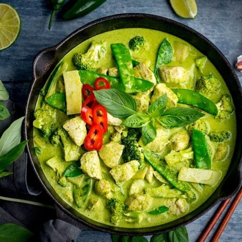

Green Curry

Thai Green Curry is….Very fragrant – from all the herbs and aromatics
in the curry paste. It has a less “in your face” flavour compared to
Thai Red Curry but it's more fragrant with chilli than Thai Yellow
Curry. Creamy, sweet, and salty. But all too often, Thai takeout places
make it far too sweet!
Ingredients
- Thai basil
- Bamboo shoots,canned
- Red bell pepper
- Green curry paste, store bought or homemade
- Makrut lime leaves
- Full fat coconut milk
- Fish sauce
- Palm sugar (sub granulated or brown sugar)
- Boneless skinless thighs
- Chicken strock, unsalted
Method
-
Optional step: Pound green curry paste and Thai basil leaves for an
extra vibrant colour
- Get the paste as fine as possible.
- Reduce the coconut milk until very thick
- Add the curry paste and saute for a few minutes
- Toss chicken with the curry paste.
- Add coconut milk
- Add chicken stock
- Add makrut lime leaves.
- Simmer for 10-15 minutes until the chicken is fork tender.
-
Add bamboo shoots and cook for a minute until the curry comes back to a
boil.
- Stir in red bell pepper and turn off the heat.
- Add Thai basil and stir just until wilted.
- The green curry is now ready to serve with jasmine rice!